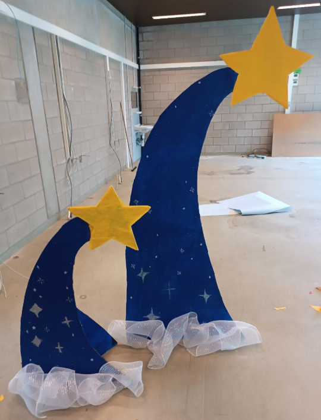
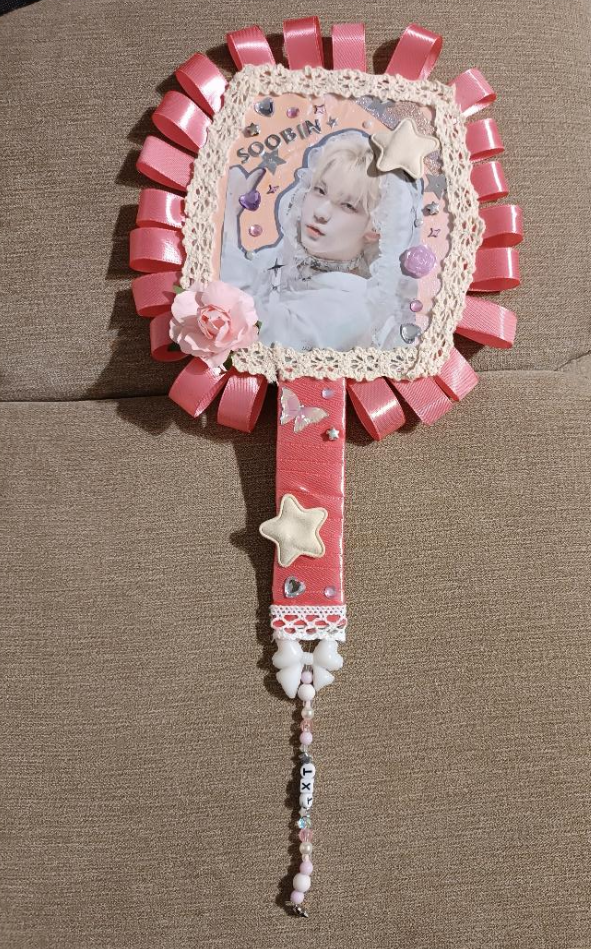
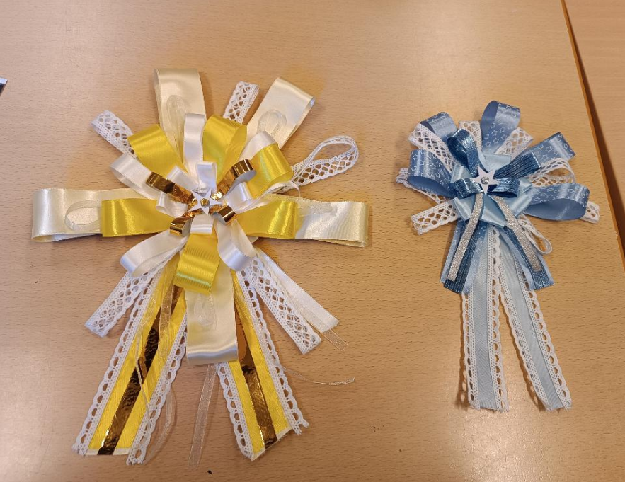
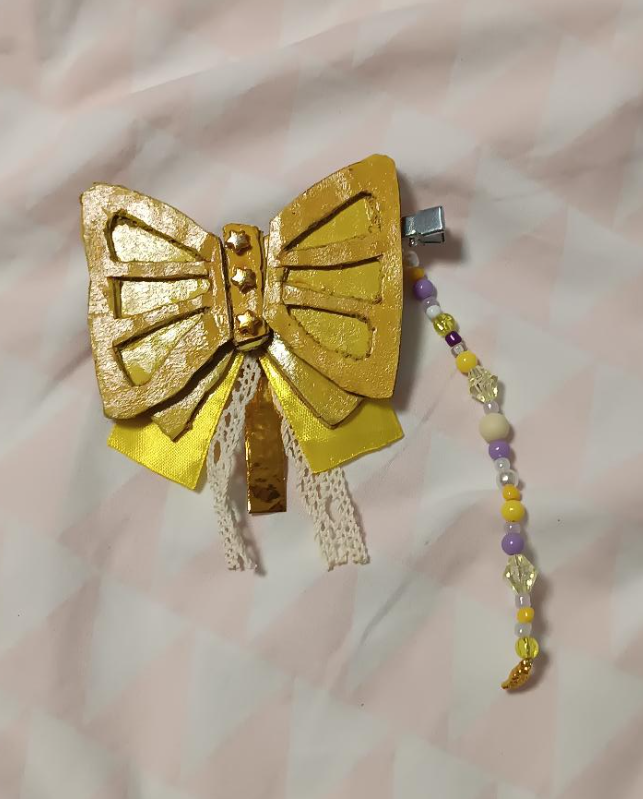

⬩➤ Appart from drawing, i also always loved crafting. I always used to craft props from series or games i love, or just acessories in general. Two works you see here (the star and the rosette), i made them for school, specifically graduation.



